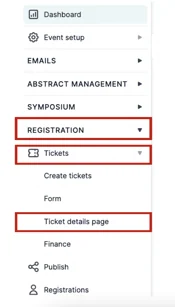
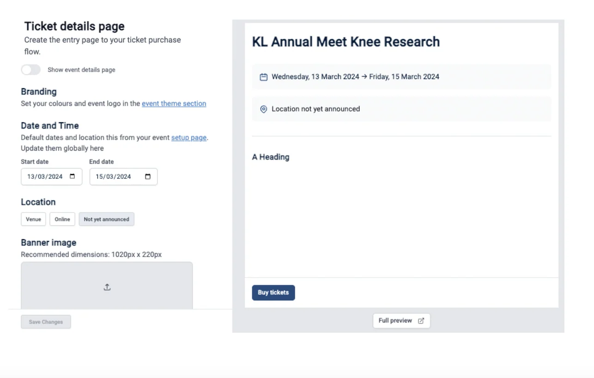
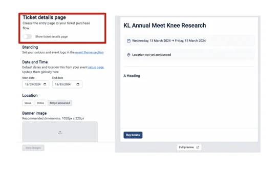
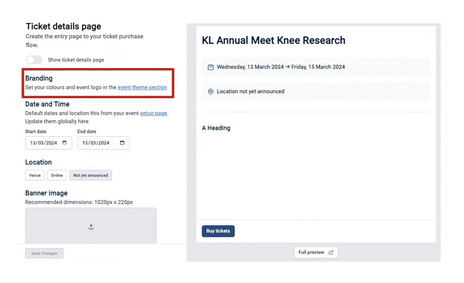
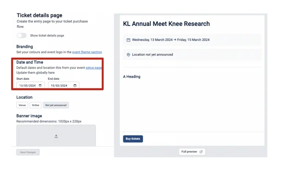
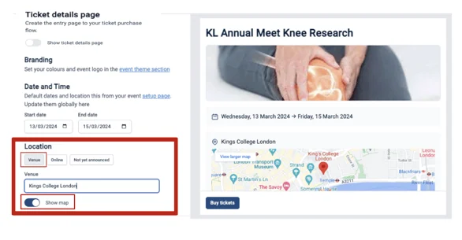
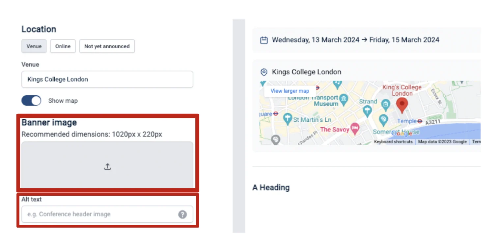
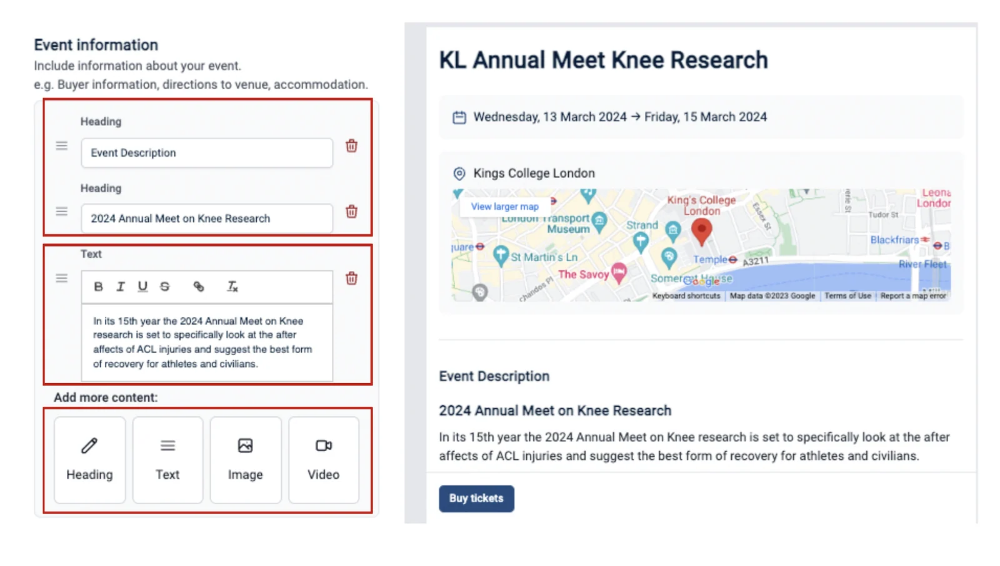
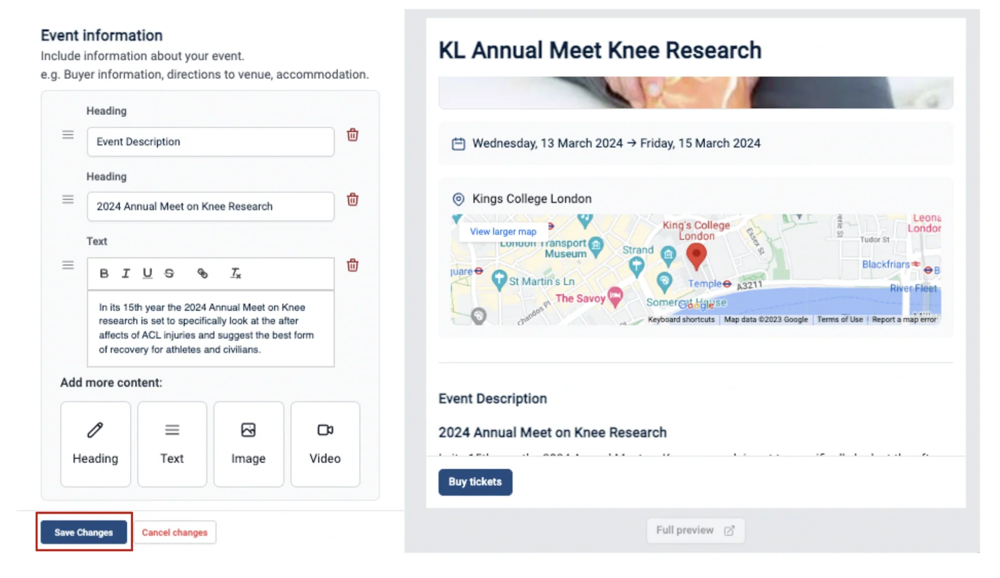
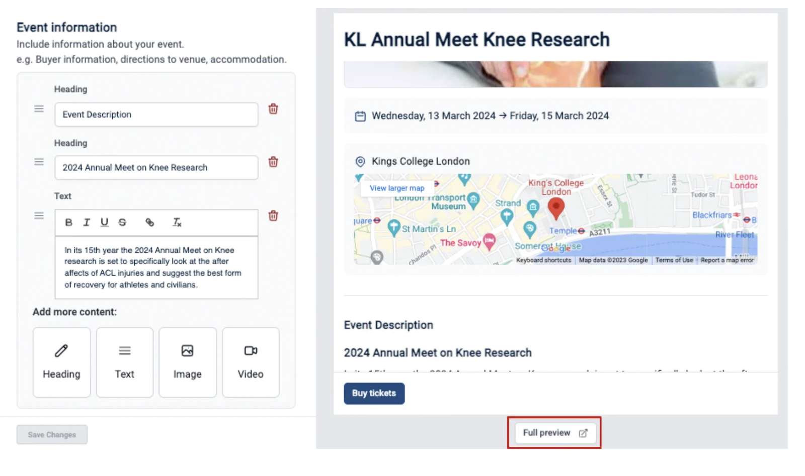

Editing your delegate registration ticket details page
In this article event admins can learn how to create and edit their delegate registration ticket event details page.#
This information is for Event Admins ONLY!
You can either watch the video below for a step-by-step walkthrough or scroll down to follow the written instructions.
From your main dashboard, navigate to the left-hand column and click on Registration → Tickets → Ticket Details Page.

On the next screen, you can make all the edits required for your ticket details page that attendees will see and use.
To the right of the screen, you can preview what it will look like.

You will be able to:
- Make your registration ticket page public or unpublished
Click the Toggle on to publish or off to unpublish your ticket details page.

- Add your branding colours and event logo
Click on the underlined Event Theme Section to add your branding colours and logo.

- Date and time of the event

- Location of event
Click on the Venue tab to enter the venue address and toggle on Show Map if you wish to add a map to the page.

- Banner image for your ticket details page
Click the Upload Arrow in the middle of the grey box to upload your banner image.
You can also include Alt text below if you wish for the banner image.

- Event information
Click on each box to expand and add the following information to the events registration page:
- A heading
- Text
- Image
- Video
You can also drag and drop these boxes to rearrange the order they appear in.
In the example below, you can see the Heading box and Text box have been clicked on, and text has been added with the page preview to the right of the screen.

Once you have completed all of the above, you need to click on the Save Changes Button at the bottom of the page.

Next, you can preview how this page will look to attendees by clicking on the Full Preview Button at the bottom right of the screen.

If you require further assistance, please get in touch with our Support Team via the Contact Form.
Did this page solve it?
Thanks — this helps us fix it.
Didn't solve it? Ask our support team
No question is too small, and there's no charge for asking. Raise a ticket and someone who knows the software will pick it up.